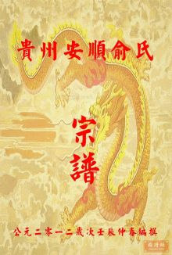

俞姓基本簡介
編輯
商周時期在今山東省西部有一個古俞國，俞國的國君叫作俞伯。商代的俞國位於今山東省梁山縣一帶，西周以後又北遷到今山東省夏津縣。俞國雖小，但文明程度頗高。清末曾出土過有關俞國曆史的七件精美絕倫的商代青銅器，俞國後來大概是被趙國所滅。俞國的歷史沒有任何史書記載，僅僅見於清末地下文物的發現 。
俞姓姓氏淵源
編輯俞（Yú）姓源出有：
- 源流一
 俞氏宗祠
俞氏宗祠
很早以前，中國的杏林之祖為黃帝大臣付。他曾跟神農嘗百草，熟知各種藥草的性能，被視為神醫。有一次黃帝的小兒子禺陽只剩下一口氣。黃帝很疼愛這個兒子，見狀十分悲痛。付就剖開禺陽的肚子，把他的內臟清洗乾淨，終於把他救活。事後有人問他：“快死的人了，你剖開他肚子，萬一救不活豈不是要承擔罪責？”他説：“當醫生的首要條件，就是忘掉自己，只有忘掉自己，才把能心放在患者身上”。由於他醫術高明，不管多麼嚴重的病，都能使病人痊癒。所以， 人們都叫他愈付，愈、俞同音，後來就稱俞跗，他的後人就以俞為姓，就是俞氏，奉俞付為俞姓俞姓始祖。史料記載俞姓的來源只有一種説法。
俞跗，見於《列子·力命篇》。據説他名叫跗，因精於腧經之治，是經脈理論奠基人，人們因此稱他俞跗（“俞”與“腧”字通）。這就是説“俞”並不是一個姓氏，而且這個“俞”字應該讀作“輸”，與俞姓的讀音大相徑庭，怎麼可以説俞姓出於俞跗之後呢？中國的文字，一般認為不會超過夏朝。黃帝的時候還沒有文字，即使已有文字，也在初創時期，一般都比較簡單，也只能是象形、會意字而已。“俞”字據説是一個象形字，或者初創期有可能已經出現；而像“跗”這樣的形聲字是決不可能有的，俞跗這個人物自然是不可信的了（見徐鐵生《中華姓氏源流大辭典》2014）。
清末學者俞樾(1821－1907)曾經寫過一篇《説俞》一文，對俞姓的來源作了詳細的考證，似乎也不得要領。那麼，先秦考古文獻中有沒有留下一點有關俞姓來源的蛛絲馬跡呢？我們可以從羅振玉的《三代吉金文存》一書中查到俞伯簋、俞伯卣兩件西周青銅器銘文。銘文中的俞伯，原文寫作艅伯。吳鎮烽教授認為這個艅伯（俞伯）是艅國族的首領。也就是説西周時存在着一個伯爵小國，叫艅國。艅國的國族稱為艅氏，也可以稱為俞氏（這叫假借）。春秋時吳王闔廬有一條船，名叫“俞皇”，也寫作“艅艎”。這就給“艅”字可以假借作“俞”字提供了一個很好的依據。
- 源流二
源於姬姓，出自春秋時期魯國公族公子泄堵俞，屬於以先祖名字為氏。泄堵俞，為魯國王室公子，是魯莊公姬同的小兒子。在周襄王姬鄭十六年魯國公子泄堵俞率魯軍征伐滑國(原在今河南睢縣，後遷費，即今河南偃師氏緱鎮，故又稱為費滑，後被秦國所滅)，後被魯僖公(魯釐公)姬申封賜於俞地。俞，又稱符俞，亦稱先俞、西俞，即今江蘇省泗陽市。周安王姬驕九年(楚悼王九年，公元前393年)，楚悼王熊疑因魯國聲援鄭國而發動了進攻魯國的戰役，符俞之地成為兩軍戰場，之後歸於楚國。兩年後的周安王十一年(楚悼王十一年，公元前391年)，韓、魏、趙三國聯手討伐楚國，大敗楚軍於大梁(今河南開封)、榆關(今河南中牟)，其後，大梁成為魏國的都城，而符俞則被趙列侯趙籍瓜分而去。
符俞之地歸魯無望後，在公子泄堵俞的後裔子孫中，即以先祖封邑名稱為姓氏，稱俞氏，世代相傳至今。
- 源流三
源於羋姓，出自春秋時期楚國官吏俞人，屬於以官職稱謂為氏。據史籍《路史》記載：“春秋時楚公族有大夫俞人，相傳至今。”其實，俞人，並不是羋姓直接衍派的血緣氏族，而是官職稱謂，就是執掌建造船隻的官員。俞，在遠古時期就是指挖空樹幹做船(獨木舟)，“以為河徑”，就是渡河的工具、途徑。後在春秋時期的楚國泛指船。俞人，開始指製作船隻的工匠，後演變為督管船隻建造的官職稱謂，直接隸屬於尹司。由於楚國地處江淮平原，渡河運輸、作戰十分頻要，因此“俞”是楚國令尹轄下的重要職能部門，俞人是不可或缺的職位。至戰國中期的周顯王姬扁四十六年(楚懷王六年，公元前323年)，由楚懷王熊槐改稱其為更明確的“舟節”，與“車節”一起歸由工尹啓之府統一管轄。在戰國時期的楚國，“節”是“專”的意思，舟節就是專職掌管水路營造、運輸的官位，車節就是專職掌管陸路營造、運輸的官位。後世漢、唐朝時期的“節度使”之官稱，就是從此而來。
在俞人的後裔子孫中，有以先祖官職或職業為姓氏者，稱俞人氏，後省文簡化為單姓俞氏，世代相傳至今。
- 源流四
源於蒙古族，出自蒙古欽察部首領玉里伯牙吾·不花鐵木耳，屬於漢化改姓為氏。元朝時期，有一位著名的東路蒙古元帥玉里伯牙吾·不花鐵木耳，為蒙古欽察部國主後裔，後為元朝敕贈武平王。其侄子燕鐵木耳、·撒敦、以及侄孫唐其勢等，均為元朝丞相，家族中還出了一位皇后玉里伯牙吾氏，因此在元朝晚期顯赫一時。在元順帝孛兒只斤·妥歡貼睦爾繼位後，元朝政權實際上掌握在燕鐵木耳與伯顏兩大丞相家族手中，兩派鬥爭激烈，後玉里伯牙吾氏家族發動政變，被伯顏乘機剷除。在玉里伯牙吾氏家族受到“鐵腕太師”伯顏勢力的打擊而失勢後，族人退出政界，舉族返回其封地鳳陽府安豐縣(今安徽壽縣)。在元朝末期，該家族為躲避政敵殺戮，逃到廬陽(安徽合肥古代的別稱)，取原姓首字“玉”的諧音，更姓為俞氏。現玉里伯牙吾·不花鐵木耳家族的後裔俞氏子孫，廣泛分佈在今四川、安徽、雲南、貴州、重慶、湖南、江蘇、江西等地區。
- 源流五
源於滿族，出自明朝時期女真諸部，屬於漢化改姓為氏。據史籍《清朝通志·氏族略·滿洲八旗姓》記載：
⑴.滿族哈爾察氏，亦稱薩哈爾察氏，滿語為Harca Hala，世居尼馬察(今黑龍江穆稜興凱湖彼岸俄羅斯烏蘇里斯克一帶)、海蘭(今吉林和龍海蘭河流域)、葉赫(今吉林梨樹葉赫鄉南部)等地，後多冠漢姓為俞氏、哈氏。
⑵.滿族尼瑪哈氏，源出唐朝末期女真“通用三十姓”之一的尼漫古部，在金國時期稱作尼龐古部，以部為氏，滿語為Nimaha Hala，漢義“魚”，世居遼陽(今遼寧遼陽)，是滿族最古老的姓氏之一。後多冠漢姓為俞氏、於氏、餘氏、勝氏等。
⑶.滿族裕爾庫哷氏，滿語為Yurkure Hala，世居尼馬察(今黑龍江穆稜興凱湖彼岸俄羅斯烏蘇里斯克一帶)，後多冠漢姓為俞氏。
⑷.滿族俞窟里氏，亦稱玉庫哷氏，滿語為Yukure Hala，世居洪愛(今吉林永吉、蛟河一帶)、虎爾哈(今黑龍江黑河對岸俄羅斯地區)、空科巴賽(今俄羅斯結雅河支流託木河口北岸)、松花江兩岸等地，後多冠漢姓為俞氏、於氏等。
- 源流六
源於其他少數民族，屬於漢化改姓為氏。今彝族、土族、回族、朝鮮族等少數民族中，均有俞氏族人分佈，其來源大多是在唐、宋、元、明、清時期中央政府推行的羈縻政策及改土歸流運動中，流改為漢姓俞氏，世代相傳至今。
- 源流七
源於姬姓，出自春秋時期衞國大夫甯俞，屬於以先祖名字為氏。甯俞，就是著名的甯武子姬甯俞（孔子贊其智猶可及其愚不可及者），是春秋時期衞國執政上卿甯速的兒子，後亦為衞國大夫，以聰慧、忠誠著稱於世。在姬甯俞的後裔子孫中，有以先祖名字為姓氏者，分稱俞氏、甯氏，世代相傳至今。
俞姓遷徙分佈
編輯隋唐以前，已有俞姓人在湖北繁衍，並有俞姓人越過長江，進入江東（至於俞林，可能其為古代少數民族人。今存，以備參考）。唐代武則天時，荊州江陵（今湖北省潛江市一帶）人俞文俊斗膽進言，稱新豐之地無端冒出一座山來，是因武則天“女主居陽位”之故。此言激怒了武則天，於是就把他流放到當時尚屬荒僻之地的嶺南。俞姓的後裔也就由此到達了中國南方的廣東和廣西一帶。因此，中國南方的俞姓人氏，應該有很多都是這位俞文俊的後裔。根據《郡望百家姓》及《姓氏考略》等所載，俞姓地望分佈有四，這些資料表明，在隋唐之際或隋唐以前，俞姓曾長期生活在今山西、河南、河北、湖北等省，並人丁興旺，族大人眾。進入宋代以後，俞姓突然光芒四射，入載《中國曆代人名大辭典》者僅宋代就有四十四人，除三位查無籍貫外，其餘均為今浙江、安徽、福建、江蘇、江西人，其後之俞姓名人也以上述之地分佈為眾。明初，俞姓作為明朝洪洞大槐樹遷民姓氏之一，被分遷於陝西、甘肅、河北、天津等地。明清之際，俞姓仍以華東之地為眾，但散居之地漸多。如今，俞姓在全國分佈甚廣，尤以安徽、浙江、江蘇等省多此姓，上述三省俞姓約佔全國漢族俞姓人口的百分之七十。
俞姓傳統文化
編輯俞姓郡望堂號
- 郡望
河內郡：古以黃河以北為河內，以南、以西為河外，這是晉國人的觀點。楚漢之際置河內郡，轄今豫北的西部，治所在懷縣（今河南省武陟西南）。西晉移治野王（今沁陽）。隋於野王為河內縣。隋唐河內郡即懷州。元懷慶路。明清懷慶府。河內縣之名不變，常為治所。民國政府時，改河內縣為沁陽。
河間郡：漢有河間郡（或河間國），治樂城（今河北獻縣東南）。北魏時置郡，移治今河北省河間，獻縣。隋唐時為瀛州河間郡。北宋後期升河間府，治河間（今河間）。元為河間路。明清為河間府。據《周禮疏》記載：黃帝臣有俞柑，當為俞姓之始。望出河間。

各地俞氏宗族譜(14張)
- 堂號
俞姓主要堂號有：“流水堂”、“江陵堂”、“高山堂”、“春在堂”、“正氣堂”、“思本堂”、“四公堂”等。
俞姓宗族特徵
1、俞姓雖早見於史，但宋代以前並不常見。
 宗祠
宗祠
3、俞姓南遷要早於其他姓氏，俞姓入兩廣之早，更為他姓所不能比。
俞姓家譜文獻
江蘇溧水俞氏宗譜二十八卷，（清）俞濟川纂，清光緒二十五年（公元1899年）木刻活字印本。現被收藏在江蘇省溧水縣孔鎮鄉大王埂。
江蘇沛縣泗水俞氏於同公支譜十卷首一卷末一卷，（民國）前隆圭修，民國十一年（公元1922年）恩本堂活字排印本八冊。現被收藏在上海市圖書館。
江蘇江都維揚江都俞氏六修族譜四卷，（清）俞之祿等修，清光緒二十二年（公元1897年）半山堂活字本四冊。現被收藏在中國國家圖書館。
江蘇無錫俞氏宗譜二十八卷，（清）俞復餘纂修，清光緒年間無錫刻本二十八冊。現被收藏在四川省圖書館。
江蘇無錫梁溪俞氏宗譜後編，著者待考，敦睦堂木刻活字印本。現被收藏在江蘇省常州市圖書館（今僅存一冊）。
浙江俞氏宗譜，（明）俞繼孝等修，清朝年間木刻活字印本一冊。現被收藏在浙江嘉興市圖（殘破）注：版心作《如在堂重修家譜》。
浙江桐廬桐洲俞氏宗譜四卷，（清）俞起鵬、俞起候等修，清嘉慶十六年（公元1811年）永裕堂木刻活字印本三冊。現被收藏在浙江衢州市文物管理局（二部）。
浙江桐廬桐江緱嶺俞氏宗譜十卷，（清）俞紹澄纂，清宣統元年（公元1909年）木刻活字印本，今缺第六卷。現被收藏在浙江省桐廬縣檔案館。
浙江寧波三山俞氏宗譜，（清）項歷農纂修，清道光三十年（公元1856年）永思堂木刻活字印本一冊，。
現被收藏在浙江省寧波市天一閣文物管理所。
浙江寧波三山俞氏宗譜，（清）鄭文綸纂修，清光緒六年（公元1880年）永思堂木刻活字印本一冊。
浙江寧波三山俞氏宗譜，（清）朱景徽纂修，清光緒二十九年（公元1903年）永恩堂木刻活字印本一冊。現被收藏在浙江省寧波市天一閣文物管理所。
浙江餘姚餘姚臨山俞氏宗譜三卷，（民國）俞星洲等續修，民國二年（公元1913年）敦倫堂木刻活字印本二冊。現被收藏在中國國家圖書館、中國科學院圖書館。
浙江鄞縣桃義驪江俞氏宗譜三卷，（清）俞克鋆纂修，清光緒七年（公元1881年）明德堂木刻活字印本二冊。現被收藏在浙江省寧波市天一閣文物管理所。
浙江鄞縣桃義江俞氏宗譜三卷，（民國）俞明洲纂修，民國五年（公元1916年）明德堂木刻活字印本二冊。現被收藏在浙江省寧波市天一閣文物管理所。
浙江鄞縣獲江俞氏宗譜五卷，著者待考，清光緒年間木刻活字印本。現被收藏在浙江省鄞縣朝陽鄉張俞村。
浙江鄞縣獲江俞氏節房支譜一卷，著者待考，民國年間稿本。現被收藏在浙江省鄞縣朝陽鄉新屋村。
浙江鄞縣鄞東塘爨俞氏宗譜，著者待考，清光緒年間滋德堂木刻活字印本，今僅存世系第二卷、世表第四卷、世傳第二～五卷。現被收藏在浙江省寧波市天一閣文物管理所。
浙江鄞縣鄞南效段塘俞氏宗譜三卷，首一卷，(民國)馮炳然、胡昆暘纂修，現被收藏在民國十四年（公元1925年）詒谷堂木刻活字印本四冊。浙江省寧波市天一閣文物管理所。
浙江鄞縣四明洋山爨俞氏宗譜六卷，首一卷，（民國）俞慈濂、俞樹烈等纂修，民國十九年（公元1930年）滋德堂木刻活字印本五卷。現被收藏在浙江省寧波市天一閣文物管理所。
浙江鄞縣東吳俞氏宗譜八卷，（民國）吳之才俞武權等纂修，民國二十一年（公元1932年）桂蔭堂木刻活字印本。現被收藏在浙江省寧波市天一閣文物管理所，今僅存第一卷、第七～八卷。
浙江鄞縣四明爨俞氏宗譜十卷首末二（民國）俞志清俞玉惠等纂修，民國三十三年（公元1944年）樹德堂木刻活字印本十一冊。現被收藏在浙江省寧波市天一閣文物管理所。
浙江奉化我陽俞氏宗譜一卷，（清）袁政修，清光緒二十八年（公元1902年）木刻活字印本。現被收藏在浙江省奉化縣文物管理局。
浙江德清俞氏宗譜四卷，（民國）俞世興、俞世揚等纂修，民國十三年（公元1924年）木刻活字印本。現被收藏在浙江德清縣檔案館。
浙江紹興陸俞氏家譜，（清）俞昌會輯清道光二十四年（公元1844年）木刻活字印本二冊。現被收藏在日本東京國立博物館、美國猶他州家譜學會。
浙江紹興俞氏宗譜三卷，（清）俞家新等重修，清咸豐六年（公元1856年）木刻活字印本二冊。現被收藏在日本東京國立博物館、美國猶他州家譜學會。
淅江紹興暨陽山陰合族俞氏宗譜四卷，（清）俞氏族人續修，清光緒二十年（公元1894年）佑啓堂木刻活字印本四冊。現被收藏在中國國家圖書館。
浙江紹興暨陽山陰合族俞氏宗譜六卷，俞氏族人等修，民國七年（公元1918年）佑啓堂木刻活字印本六冊。現被收藏在中國國家圖書館。
浙江紹興山陰巖川俞氏宗譜，著者待考，清光緒二年（公元1876年）木刻活字印本二冊。現被收藏在浙江省圖書館。
浙江諸暨暨陽次峯俞氏宗譜，（民國）俞浩等續修，民國六年（公元1917年）古邘堂木刻活字印本一冊。現被收藏在日本東京國立博物館、美國猶他州家譜學會。
浙江新昌俞氏西宅新修宗譜，（清）俞亙、俞大光編，清雍正八年（公元1730年）木刻活字印本八冊。現被收藏在浙江省圖書館。
浙江新昌俞氏西宅世德祠宗譜九卷，首一卷、末一卷，（清）俞有松、俞金南、俞繼朝、俞永木等纂，清光緒十二年（公元1886年）木刻活字印本。現被收藏在浙江新昌縣文物管理局。
浙江新昌俞氏青安坊東宅二房宗譜十卷，首一卷，著者待考，清光緒十五年（公元1889年）木刻活字印本。現被收藏在浙江新昌縣文物管理局。
浙江新昌俞氏東宅萃和祠宗譜十二卷，首一卷，（民國）俞景文述，俞以章等纂，民國三十七年（公元1948年）鉛印本。現被收藏在浙江新昌縣文物管理局。
浙江上虞古虞嵩城俞氏家乘，（清）俞炳增修，清道光二十年（公元1840年）孝思堂木刻活字印本五冊。現被收藏在南開大學圖書館。
浙江上虞崧城俞氏家乘八集八卷，首一卷、末一卷，（清）俞鏡元、俞鍾祥輯，清光緒二十九年(公元1903年)孝思堂木刻活字印本。現被收藏在中國國家圖書館、北京大學圖書館、浙江省圖書館。
浙江上虞俞公景初紹初家傳，著者待考，（民國）劉鹹榮、裴維侒同撰，民國年間石印本一冊。現被收藏在中國國家圖書館、
浙江嵊縣蒼巖俞氏宗譜，著者待考，清咸豐二年（公元1852年）木刻活字印本，今僅存第十八卷。現被收藏在浙江省嵊縣圖書館。
浙江蘭溪南毛埠俞氏宗譜四卷，著者待考，清光緒三十三年（公元1907年）木刻活字印本。現被收藏在浙江省蘭溪縣新周鄉。
浙江蘭溪俞氏宗譜十二卷，著者待考，民國十四年（公元1925年）木刻活字印本。現被收藏在浙江省蘭溪縣金湖鄉下俞村（今缺四卷）。
浙江蘭溪俞氏宗譜一卷，著者待考，民國二十年（公元1931年）木刻活字印本。現被收藏在浙江省蘭溪縣楊塘鄉（不全）。
浙江東陽長林俞氏宗譜十六卷，（民國）俞欽哉纂，民國二十九年（公元1940年）木刻活字印本一冊。現被收藏在浙江省東陽縣紅旗鄉大里村。
浙江衢州桐洲俞氏宗譜四卷，（民國）俞福和、俞壽祿等修，民國三十二年（公元1943年）木刻活字印本三冊。現被收藏在浙江省衢州市文物管理局。
浙江仙居九郎溪俞氏宗譜，（清）俞漢渠等修，清同治四年（公元1865年）木刻活字印本，今僅存第三捲上冊、第四卷、第七～十四卷、第十六卷、第十八～二十一卷。現被收藏在浙江省臨海縣博物館。
浙江仙居九郎溪俞氏宗譜二十四卷，末一卷，（民國）俞海龍等修，俞夢漢等輯，民國九年（公元1920年）木刻活字印本，今缺第四～五卷、第七卷、第十一卷、第十九卷、第二十一卷。現被收藏在浙江省臨海縣博物館。
浙江俞氏族譜，（清）俞長纓續修，清康熙四十六年（公元1707年）可儀堂木刻活字印本一冊。現被收藏在吉林大學圖書館。
安徽俞氏統宗家譜，（明）俞文耀、俞緒慶纂修，明隆慶四年（公元1570年）木刻活字印本一冊。現被收藏在中國國家圖書館、河北大學圖書館。
安徽蕪湖俞氏宗譜二卷，附墳墓考一卷，（民國）俞復纂，民國二十八年（公元1939年）德蔭堂鉛印本。現被收藏在山西省圖書館、哈爾濱師範大學圖書館。
安徽徽州俞氏統會大宗譜三卷，（明）俞時育纂修，明萬曆三十八年（公元1614年）木刻活字印本三冊。現被收藏在中國國家圖書館。
安徽徽州新安俞氏統宗譜十九卷，（明）俞肇光纂修，明萬曆四十四年（公元1616年）木刻活字印本，今僅存第一～三卷、第七～十卷。現被收藏在浙江省圖書館。
安徽徽州新安俞氏宗譜四卷，首一卷，（清）戴恆纂修，清光緒三十一年（公元1905年）致和堂木刻活字印本四冊。現被收藏在南京大學圖書館。
安徽休寧山斗俞氏宗譜十卷，（明）俞尚玉纂修，明萬曆四十八年（公元1620年）木刻活字印本四冊，今僅存第一～八卷。現被收藏在中國國家圖書館。
安徽歙縣新安俞氏統宗譜，著者待考，明朝年間木刻活字印本，今僅存第十二～十五卷、第十七～十八卷，卷數不明。現被收藏在中國國家圖書館。
江西婺源婺東永川俞氏族譜，著者待考，（明）俞一貫、俞文進纂修，明萬曆年間木刻活字印本二冊。現被收藏在安徽省博物館。
江西婺源龍溪俞氏宗譜十六卷，首一卷、末一卷，（清）俞大沄、俞永稷等修，清乾隆四十七年(公元1782年)木刻活字印本四冊。現被收藏在河北大學圖書館、安徽省博物館。
江西婺源婺東浦口俞氏家乘十八卷，（清）俞懷報等編，清嘉慶十二年（公元1807年）木刻活字印本十八冊。現被收藏在中國國家圖書館。
江西婺源續修泓田俞氏支譜，著者待考，（清）俞森修，清道光六年（公元1826年）木刻活字印本二冊。現被收藏在安徽省圖書館。
江西婺源新源俞氏家譜十卷，（清）俞永宗等纂修，清光緒二十八年（公元1902年）木刻活字印本十冊。現被收藏在南開大學圖書館。
江西婺源龍騰俞仕宜公支譜十六卷，（清）俞桂彬等纂修，清宣統三年（公元1911年）睦倫堂木刻活字印本十二冊。現被收藏在中山大學圖書館。
湖南長沙俞家壠俞氏四修族譜十七卷，（民國）俞先鉍纂序，民國八年（公元1919年）吳興堂木刻活字印本。現被收藏在湖南省圖書館（今存十四卷，另有一部存第四～七卷）。
湖南中湘島石峯俞氏五修族譜十卷，首二卷，（民國）俞家仍等纂修，民國三年（公元1914年）尋源堂木刻活字印本十二冊。現被收藏在中國國家圖書館。
重修俞氏統宗譜二卷，（明）俞周隨纂修，明天啓年間木刻活字印本。現被收藏在中國國家圖書館。
俞氏宗譜十二卷，（民國）俞衡山總修，民國二十年（公元1931年）永錫堂木刻活字印本十二冊。現被收藏在中國國家圖書館。
俞氏宗譜，著者待考，（民國）俞復纂，民國二十四年（公元1935年）德蔭堂鉛印本二冊。現被收藏在中國國家圖書館。
俞氏宗譜，（清）俞志康等纂修，清光緒二十三年（公元1897年）永錫堂木刻活字印本七冊，缺第四卷。現被收藏在中國家譜網站檔案館。
鼓城俞氏世譜，（清）俞錘鑾、俞調卿纂修，清光緒十五年（公元1889年）木刻活字印本一冊。現被收藏在中國家譜網站檔案館。
崧城俞氏家乘十八卷，首一卷、末一卷，（民國）俞德寶等修，民國十七年（公元1928年）孝思堂木刻活字印本十二冊。現被收藏在中國家譜網站檔案館。
毗陵俞氏宗譜九卷，（民國）俞潤源纂修，民國三十七年（公元1948年）石印本十冊。現被收藏在中國家譜網站檔案館。
姚江古將塘俞氏宗譜六卷，首一卷，（民國）俞贊纂修，民國二十三年（公元1934年）維則堂木刻活字印本六冊。現被收藏在中國家譜網站檔案館。
龍溪俞氏宗譜十六卷，首一卷、末一卷，（清）俞大涌等修，清乾隆四十七年（公元1782年）木刻活字印本四冊。現被收藏在中國家譜網站檔案館。
俞氏宗譜，附傅芬集前編，（民國）俞復纂修，民國二十八年(公元1939年)鉛印本二冊。現被收藏在中國家譜網站檔案館。
俞氏統宗家譜，（明）俞文耀等修，明隆慶年間修抄本一冊。現被收藏在中國家譜網站檔案館。
浙江永康山塢村志（俞氏），（現代）俞昌義等修，1999年計算機排版膠印本一冊。現被收藏在中國家譜網站檔案館。
浙江諸暨暨陽次峯俞氏宗譜，（清）俞國紅、俞渭川等修，清光緒二十四年（公元1898年）古邗堂木刻活字印本一百九十冊。現被收藏在中國家譜網站檔案館。
浙江諸暨暨陽次峯濡城俞氏宗譜，著者待考，清乾隆十二年（公元1747年）古邗堂木刻活字印本二冊。現被收藏在中國家譜網站檔案館。
浙江永康俞溪頭志（俞姓，另外有李、胡、吳、陳、應、汪等），（現代）俞興邦等修，1997年計算機排印本一冊。現被收藏在中國家譜網站檔案館。
浙江永康洪湖俞氏宗譜，著者待考，民國二十六年（公元1937年）木刻複印本一冊，今僅存第二卷。現被收藏在中國家譜網站檔案館。
上虞俞氏家譜，著者待考，清朝年間承啓堂木刻活字印本一冊。現被收藏在中國家譜網站檔案館。
上虞百官俞氏家乘，著者待考，民國四年（公元1915年）思成堂木刻活字印本三冊。現被收藏在中國家譜網站檔案館。
上虞百官俞氏家乘，著者待考，民國年間木刻活字印本五冊。現被收藏在中國家譜網站檔案館。
上虞古虞嵩城俞氏家乘，著者待考，清乾隆四十六年（公元1781年）孝思成堂木刻活字印本二冊。現被收藏在中國家譜網站檔案館。
上虞古虞嵩城俞氏家乘五集，（清）俞炳纂修，清道光二十年（公元1840年）孝思堂木刻活字印本五冊。現被收藏在中國家譜網站檔案館。
上虞崧城俞氏家乘八集，（清）俞彥彬等纂修，清光緒二十九年（公元1903年）孝思堂木刻活字印本八冊。現被收藏在中國家譜網站檔案館。
上虞崧城俞氏家乘十八卷，首一卷，末一卷，（民國）俞彥彬等纂修，民國十七年孝思堂木刻活字印本十二冊。現被收藏在中國家譜網站檔案館。
上虞虞東俞氏宗譜十二卷，（民國）俞乃璇纂修，民國二十年（公元1931年）永錫堂木刻活字印本十二冊。現被收藏在中國家譜網站檔案館。
上虞虞東俞氏宗譜八卷，首一卷，（清）俞晉等修，清咸豐六年（公元1856年）永錫堂木刻活字印本四冊。今僅存第一卷、第四～五卷、第七卷、卷首。現被收藏在中國家譜網站檔案館。
上虞虞東俞氏宗譜八卷，（清）俞志康纂修，清光緒二十三年（公元1897年）永錫堂木刻活字印本八冊。現被收藏在中國家譜網站檔案館。
石川俞氏宗譜，著者待考，清咸豐九年（公元1859年）木刻活字印本一冊，今僅存第四～五卷。現被收藏在中國家譜網站檔案館。
仕川俞氏宗譜，主張餓待考，清朝年間木刻活字印本一冊，今僅存第十二卷。現被收藏在中國家譜網站檔案館。
休寧山斗俞氏宗譜，主張餓待考，明朝年間木刻活字印本一冊，今僅存第八卷。現被收藏在中國家譜網站檔案館。
青陽俞氏族譜，（清）俞黃等纂修，清宣統三年（公元1911年）稿本一冊，今僅存第二卷。現被收藏在中國家譜網站檔案館。
奉化奉川俞氏房譜，（民國）戴乾纂修，民國二十二年（公元1931年）顯承堂鉛印本一冊。現被收藏在中國家譜網站檔案館。
東陽俞氏宗譜十卷，（清）俞嘉徵等纂修，清道光二十九年（公元1903年）木刻活字印本十冊。現被收藏在中國家譜網站檔案館。
東陽俞氏宗譜十二卷，（清）俞國智等纂修，清光緒元年（公元1875年）木刻活字印本十一冊，今僅存第一～四卷、第七～十二卷。現被收藏在中國家譜網站檔案館。
東陽俞氏宗譜，著者待考，清朝年間木刻活字印本二冊，今僅存第二～三卷、第五卷。現被收藏在中國家譜網站檔案館。
東陽金山俞氏宗譜十八卷，(清)俞士遜等纂修，清光緒四年（公元1878年）木刻活字印本十四冊，今僅存第一～五卷、第七～九卷、第十二～十三卷。現被收藏在中國家譜網站檔案館。
東陽金山俞氏宗譜二十卷，（清）俞典徽等纂修，清光緒二十七年（公元1901年）木刻活字印本十二冊，今僅存第二～四卷、第六～九卷、第十一卷、第十四卷、第十六卷、第十九～二十卷。現被收藏在中國家譜網站檔案館。
東陽金山俞氏宗譜二十卷，（民國）俞永昌等纂修，民國十五年（公元1926年）木刻活字印本十冊，今僅存第一卷、第五～六卷、第十二～十八卷、第二十卷。現被收藏在中國家譜網站檔案館。
金華婺東浦口俞氏家乘二十卷，（清）俞懷化等纂修，清咸豐六年（公元1856年）木刻活字印本十九冊，今僅存第一～八卷、第十～十八卷。現被收藏在中國家譜網站檔案館。
毗陵相家橋俞氏宗譜八卷，（清）俞永保等纂修，清光緒六年（公元1880年）善慶堂木刻活字印本十六冊。現被收藏在中國家譜網站檔案館。
宣平俞源俞氏宗譜十卷，（清）俞思忠等纂修，清道光二十一年（公元1840年）木刻活字印本八冊，今僅存第一～七卷、第九～十卷。現被收藏在中國家譜網站檔案館。
剡縣剡西清化俞氏宗譜，（清）俞韶賢纂修，清乾隆五十八年（公元1793年）追遠堂木刻活字印本一冊，今僅存第一～三卷。現被收藏在中國家譜網站檔案館。
浦陽俞氏宗譜，著者待考，清光緒三十年（公元1904年）善慶堂木刻活字印本一冊，今僅存第一～二卷。現被收藏在中國家譜網站檔案館。
崇明俞氏宗譜，（清）俞文龍等纂修，清光緒二十九年（公元1903年）餘慶堂木刻活字印本十八冊，今僅存第一～六卷、第八～十八卷。現被收藏在中國家譜網站檔案館。
無為俞氏宗譜，（清）俞顯等纂修，清雍正十年（公元1732年）木刻活字印本二冊。現被收藏在中國家譜網站檔案館。
無錫錫山俞氏宗譜二十八卷，（清）俞德濟等纂修，清光緒二十七年（）德蔭堂木刻活字印本二十八冊。現被收藏在中國家譜網站檔案館。
無錫俞氏宗譜十卷，（清）俞戟門等纂修，清宣統二年（公元1910年）溶春堂木刻活字印本十冊。現被收藏在中國家譜網站檔案館。
無錫錫山西河裏俞氏支譜，（民國）俞鼎燻等纂修，民國二十四年（公元1935年）鉛印本一冊，今僅存第二卷。現被收藏在中國家譜網站檔案館。
無錫俞氏宗譜，前編一卷，後編一卷，（民國）俞氏傳芳集，前編一卷俞復纂修，民國二十八年（公元1939年）德蔭堂鉛印本二冊。現被收藏在中國家譜網站檔案館。
無錫華俞氏支譜六卷，著者待考，清朝年間木刻活字印本七冊。現被收藏在中國家譜網站檔案館。
婺源泗水俞氏幹同公支譜十卷，首一卷、末一卷，（民國）俞隆纂修，民國十一年（公元1922年）思本堂木刻活字印本八冊。現被收藏在中國家譜網站檔案館。
鄞縣新臨場俞氏宗譜，（清）俞雍廣等纂修，清宣統三年（公元1911年）光裕堂木刻活字印本二冊，今僅存第三卷、卷首、卷末。現被收藏在中國家譜網站檔案館。
蒼炭俞氏宗譜，主張餓待考，清光緒十九年（公元1893年）崇本堂木刻活字印本二冊，今僅存第三卷、第五卷。現被收藏在中國家譜網站檔案館。
廣豐杉江俞氏宗譜，著者待考，清朝年間木刻活字印本二十三冊。現被收藏在中國家譜網站檔案館。
暨陽俞氏宗譜，著者待考，清光緒三年(公元1877年)攸敍堂木刻活字印本一冊，今僅存第二卷、卷首。現被收藏在中國家譜網站檔案館。
暨陽湖頭俞氏宗譜，著者待考，民國十二年（公元1923年）木刻活字印本一冊，今僅存第八卷。現被收藏在中國家譜網站檔案館。
暨陽次峯俞氏宗譜，著者待考，清朝年間古邗堂木刻活字印本一冊。現被收藏在中國家譜網站檔案館。
新安重修俞氏統宗譜二十卷，首一卷，俞敬吾等纂修，明天啓元年（公元1621年）木刻活字印本一冊，今僅存第一卷、卷首。現被收藏在中國家譜網站檔案館。
新安俞氏統宗譜，（明）俞汪祥纂修，明嘉靖二十三年（公元1544年）木刻活字印本四冊，今僅存第一卷、第五～六卷。現被收藏在中國家譜網站檔案館。
暨陽俞氏宗譜十二卷，首一卷，（清）俞秉善等纂修，清光緒二十六年（公元1900年）攸敍堂木刻活字印本十三冊，今僅存第二～十二卷、卷首。現被收藏在中國家譜網站檔案館。
暨陽石門俞氏宗譜六卷，（清）俞郡欽等纂修，清光緒十四年（公元1888年）樹德堂木刻活字印本七冊。現被收藏在中國家譜網站檔案館。
暨陽次峯俞氏宗譜，（清）俞鴻裳等纂修，清道光十六年（公元1836年）古邗堂木刻活字印本七十三冊。現被收藏在中國家譜網站檔案館。
暨陽次峯俞氏宗譜，（清）著者待考，清咸豐四年（公元1854年）古邗堂木刻活字印本三十冊。現被收藏在中國家譜網站檔案館。
暨陽次峯俞氏宗譜，（清）著者待考，清光緒二十四（公元1898年）年古邗堂木刻活字印本四十三冊，今僅存第三十七卷、第五十卷、第六十七卷、第八十二卷、第八十七卷、第一○一卷、第一一八～一三九卷、第一四一～一四六卷、第一四八卷、第一五一～一五三卷、第一八二卷、另有四卷不明卷次。現被收藏在中國家譜網站檔案館。
暨陽次峯俞氏宗譜，（民國）俞賡等纂修，民國六年（公元1917年）古邗堂木刻活字印本一百三十四冊，今僅存第一卷、第二十一～四十九卷、第五十一～六十六卷、第六十八～八十卷、第八十二～八十六卷、第八十八～一一七卷、第一三七卷、第一四○卷、第一四‘二～一四五卷、第一四七～一四九卷、第一五一卷、第一五三～一六一卷、第一六三～一六八卷、第一七○～一八四卷。現被收藏在中國家譜網站檔案館。
暨陽次峯俞氏宗譜，（民國）俞賡等纂修，民國六年（公元1917年）古邗堂木刻活字印本十二冊。現被收藏在中國家譜網站檔案館。
暨陽次峯俞氏宗譜，（民國）俞汝諧等纂修，民國二十二年（公元1933年）古邗堂木刻活字印本十六冊。現被收藏在中國家譜網站檔案館。
暨陽次峯俞氏宗譜，著者待考，清朝年間古邗中和堂木刻活字印本三冊。現被收藏在中國家譜網站檔案館。
暨陽次峯俞氏宗譜，著者待考，清朝年間享裕堂木刻活字印本十九冊。現被收藏在中國家譜網站檔案館。
暨陽次峯儒城俞氏宗譜，著者待考，清朝年間中和堂木刻活字印本六冊。現被收藏在中國家譜網站檔案館。
暨陽次峯俞氏宗譜，著者待考，清光緒三十一年（公元1905年）中和堂木刻活字印本二冊。現被收藏在中國家譜網站檔案館。
暨陽阮塢俞氏宗譜，著者待考，清宣統元年（公元1909年）三斯堂木刻活字印本一冊。現被收藏在中國家譜網站檔案館。
暨陽金興鄉中俞俞氏宗譜四卷，（民國）俞吉雲纂，民國八年餘慶堂木刻活字印本四冊。現被收藏在中國家譜網站檔案館。
諸暨凰桐俞氏宗譜二十本，著者待考，清咸豐九年（公元1859年）永思堂木刻活字印本一冊，今僅存第一本。現被收藏在中國家譜網站檔案館。
諸暨凰桐俞氏宗譜，著者待考，清光緒二十三年（公元1897年）永思堂木刻活字印本一冊，今僅存第五本。現被收藏在中國家譜網站檔案館。
餘姚姚江將壇俞氏宗譜四卷，首一卷，（清）俞秉常等纂，清光緒二十四年維則堂木刻活字印本四冊。現被收藏在中國家譜網站檔案館。
餘姚臨山俞氏宗譜三卷，（民國）俞沅玲纂修，民國二年（公元1913年）敦倫堂木刻活字印本一冊，今僅存第一卷。現被收藏在中國家譜網站檔案館。
蕭山俞氏宗譜，著者待考，清道光二十年（公元1840年）溯本堂木刻活字印本二冊，今僅存第二～三卷。現被收藏在中國家譜網站檔案館。
蕭山俞氏宗譜清，著者待考，清道光十六年（公元1836年）溯本堂木刻活字印本一冊，今僅存第二卷。現被收藏在中國家譜網站檔案館。
蕭山俞氏宗譜，著者待考，民國六年（公元1917年）溯本堂木刻活字印本三冊，今僅存第七卷、第二十一～二十二卷。現被收藏在中國家譜網站檔案館。
鎮海俞氏宗譜，(民國)俞宗海纂修，民國年間木刻活字印本一冊。現被收藏在中國家譜網站檔案館。
俞氏西宅世德祠宗譜，著者待考，清朝年間木刻活字印本二冊，今僅存第二卷、第七卷。現被收藏在中國家譜網站檔案館。
俞氏彝修世譜，著者待考，清朝年間木刻活字印本四冊，今僅存第十四卷、第十六卷、第十八卷、第二十卷。現被收藏在中國家譜網站檔案館。
無錫華俞氏文獻表一卷，（清）華亨孳纂，清朝年間木刻活字印本七冊。現被收藏在中國家譜網站檔案館。
西谷俞氏宗譜四卷，首一卷，清光緒二十三年（公元1897年）敍論堂木刻活字印本三冊，今缺第二卷。現被收藏在中國家譜網站檔案館。
俞姓字輩排行
西昌姜坡俞氏字輩：“廷通海俊達鎮龍潮承希良臣天騰可開學文德元啓世秉忠志立品仁崇化正道永昌大恆懷光顯長遠明宗映相仕國嘉兆欽恩賜祿以萬榮”。
安徽巢湖俞氏字輩：“廷通祖宗信龍仲從再嘉拄國宜昌後文為應紹先發祥惟善澤勤學本家傳建業光昭德存誠道義全”。
安徽廬州俞氏字輩：“書香恪守”。
浙江寧波俞氏字輩：“士日聰安木伯文洪起道仁瑞玉樹增光志承祖烈功應昌芳智開善覺修治甘棠惟孝廉高雅正悠常廷顯介福永康寧莊”。
浙江紹興俞氏字輩：“宗大文良拱宏英承肇啓先緒斯昌大興人瑞邦家之光”。
廣東黃公林俞氏字輩：“仁慈興孝義承思大學初雍熙英俊裕培治朝九永業富榮祥瑞平安家士龍”。
甘肅武威俞氏字輩 ：“新安珠孟仲鳴永廷得文維生業基存 天山兆瑞明景開國泰民安萬年春”。
湖南新華俞氏字輩：“家政賢良“。
俞姓宗祠對聯
- 四言通用聯
 長汀俞氏宗祠
長汀俞氏宗祠
——佚名撰俞姓宗祠通用聯
全聯典指俞跗，黃帝時的良醫。
跗醫傳世；龍眠復生。
——佚名撰俞姓宗祠通用聯
上聯典指黃帝時名醫俞跗，其事蹟在《説苑》、《史記》中均有記載。他的醫術高明，曾注《素問》。下聯典指清代畫家俞宗禮，字人儀，號凡在，上海人，僑居吳郡。工山水及寫真，尤善白描道釋人物。有“龍眠復生”之譽。
東南禦寇；精舍講經。
——佚名撰俞姓宗祠通用聯
上聯典指明代抗倭名將俞大猷，字志輔，福建省晉江人，世襲晉軍中百户，歷任參將、總兵，因功進右都督。嘉靖年間，曾鎮壓瓊州那燕黎族人民起義。倭寇侵擾東南時，他轉戰江浙閩粵，多立戰功，與戚繼光齊名。特別是在浙江王江涇、福建興化、廣東梅豐等戰役，尤其著名。著有《正氣堂集》、《劍經》。下聯典指清代學者俞樾，字蔭甫，號曲園，浙江省德清人，道光年間進士，官翰林院編修、河南學政，晚年在杭州詁經精舍講學。研究經、子、小學，著有《羣經平議》、《諸子平議》等；能詩詞，善對聯；所作筆記，蒐羅豐富，包含有學術史、文學史資料。所著各書。總稱《春在堂全書》，共二百五十卷。
樸學泰斗；林屋山人。
——佚名撰俞姓宗祠通用聯
上聯典指清末學者愈樾（1821-1907），字蔭甫，號曲園，浙江德清人。道光進士。歷任翰林院編修、河南學政。辭官後，一意治經，主講杭州詁經精舍三十一年，為當時樸學泰斗。所著《春在堂全集》，凡五百餘卷。下聯典指宋末元初著名思想家、文學家俞琰，字玉吾，自號林屋山人，吳郡人。宋末即以詞賦聞名。於易尤精，撰有《周易集説》、《易圖纂要》等。
志在山水；意放林泉。
——佚名撰俞姓宗祠通用聯
上聯典指春秋時人俞伯牙，善於鼓琴，鍾子期能從琴聲中聽出他所表達的起向。鍾子期死後，他終生不再鼓琴。下聯典説南宋吳興人俞澄，字子清，光宗時官大理少卿。後放意于山水林泉，在浙江臨安的浮玉山對面築室，號為“無塵”，善畫竹、石。
星溪十友；河間四公。
——佚名撰俞姓宗祠通用聯
上聯典指南宋婺源人俞靖，字宋佑，學以礪行，晚年號“西郊老人”，與朱松（朱熹的父親，進士出身，官秘書省正字、司勳吏部郎，學者稱“韋齋先生”，著有《韋齋集》）等人為“星溪十友”。下聯典指明代濠人俞廷玉，元末與趙普勝在巢湖結寨，擁有一支水軍。後歸附太祖，因功官至僉樞密院事，攻安慶時戰死，追封河間郡公。他三個兒子通海、通源、通淵都被封為公、侯。
一等家數；百韻羨長；
——佚名撰俞姓宗祠通用聯
上聯典指宋代畫家俞微，字子清，號且軒，吳興人。作竹石得文蘇二公遺意，清潤可愛；山水有“自是一等家數”的評價。下聯典指明代詩人俞安期，字公臨，後改字羨長，吳江人。嘗以長律一百五十韻投王士貞，士貞為之延譽，名由是改。有《詩雋類函》等。
漁家寄傲；雲谷藏書。
——佚名撰俞姓宗祠通用聯
上聯典指宋·俞澹，與兄皆不娶，晚年作《漁家傲》等詞。下聯典指宋·俞豐，築雲谷書院以自娛，號“雲谷老人”。
- 五言通用聯
捷徑雖雲易；長衢豈不平。
——俞簡撰俞姓宗祠通用聯
此聯為唐代貞元進士俞簡《行不由徑》詩句聯。
- 七言通用聯
高山流水家聲遠；雲谷星溪世澤長。
——佚名撰俞姓宗祠通用聯
此聯為安徽省蕪湖縣石硊街俞氏宗祠聯。上聯典指春秋時人俞伯牙。下聯典指“雲谷”，典説南宋建寧人俞豐，字應南，乾道年間進士，歷官秀州知州、金部郎中、中書舍人、吏部侍郎、文華閣待制。築雲谷書院自娛，號“雲谷老人”。“星溪”，謂南宋人俞靖。
慷慨直諫惟文俊；忠誠許國有大猷。
——佚名撰俞姓宗祠通用聯
上聯典指唐江陵人俞文俊，武后時有山出於新豐，自為慶山。文俊上書，言陛下以女主居陽位，反易剛柔，故地氣塞隔，山變為災，臣以為非關也。武后大怒，流之嶺南。下聯典指明代總兵俞大猷，字志輔，號虛江，晉升江人。他博讀兵法，有將才，歷官總兵。並曾屢率水軍打敗倭寇，被稱為“俞家軍”。他用兵先計後戰，不貪近功，將略武功居世宗朝眾將之冠。
- 八言及以上通用聯
負士葬姑，俞妻盡孝；旌門貸粟，俞族同居。
——佚名撰俞姓宗祠通用聯
上聯典指俞新妻聞氏，夫死誓不改嫁，養姑撫子，姑卒，家貧，與子負土葬之。下聯典指宋俞雋一門聚族，八世同居，詔以所在貸粟，旌表其門。
醫長割解良方，學注素問；身登台閣大位，績在先朝。
——佚名撰俞姓宗祠通用聯
上聯典指黃帝時名醫俞跗(同前文所注)。下聯典指明代太子少保俞綱，字宗立，嘉善人。景帝時以兵總右侍郎入閣參預機務。後加太子少保。面化初致仕卒。
勵俗育嬰，徵連理嘉禾之異；工詩曉律，得高山流水之音。
——佚名撰俞姓宗祠通用聯
上聯典指宋·俞偉濱。下聯前句典指宋·俞紫芝；後句典旨春秋·俞伯牙。
俞姓姓氏名人
編輯俞跗：據《史記》的“扁鵲傳”中，曾經提到黃帝之時有一位良醫俞跗，相傳，這位以濟世活人之術而名傳知古的俞跗，就是數千年來中國姓俞的始祖。這位上古良醫的醫術之高超，幾乎已到達現代醫學的水準和境界。在5000年以前，俞跗醫療疾病時就不僅僅限於“對症 下藥”，而已經懂得使用“割皮解肌，洗滌五臟”的現代外科技術，這種表現，可以説為中國人的智慧提供了最有力的證明。
俞徵，字子清，號且軒，吳興（令浙江湖州）人。善畫，竹石得文同筆意。以蔭入仕。中刑法科，官福建檢法。光宗時除大理少卿。寧宗慶元初知常德府。官至刑部侍郎。卒年七十八。事見清同治《湖州府志》卷七一。 其家園林為中國園林史上最具代表性的作品之一
俞桂：仁和（今浙江省杭州）人，宋代官吏、詩人。進士及第，曾守海濱，政事之餘，不廢吟詠。有《漁溪詩稿》。
俞山：浙江省秀水人，字積之，號梅莊，明代大臣。土木之變後，擢山鴻臚寺丞，旋升吏部左侍郎。工詩，善大篆，亦精墨梅。有《梅莊集》
俞樾：浙江省德清人，清代著名學者。道光年間進士，歷任翰林院編修、河南學政。罷職後，一意治經，主講杭州詁精經舍三十一年。著述甚豐，有《羣經平議》、《諸子平議》、《古書疑義舉例》、《春在堂隨筆》、《茶香室叢鈔》、《賓萌集》、《春在堂詩編》等。為一代宗師，聲名遠極日本。
俞文俊：唐代江陵（今湖北省潛江縣西）人，因為反對武則天稱帝，就挺身而出上書則天皇帝説：“陛下以女主居陽位，反易剛柔，故地氣隔塞山變為災，臣以為非慶也……”這番大膽的奏言，當然激怒了當時目空一切的女皇帝，因此被流放到嶺南，俞氏的後裔也就此到達了中國南方的廣東和廣西一帶。故今天在兩廣生活的俞姓大部分是俞文俊的後代。
俞獻可：歙（今安徽省歙縣）人，宋代官吏。太宗端拱初進士，官吏部郎中。真宗時為廣西轉運使，平定撫水蠻亂。官終龍圖閣待制。
俞庭椿：撫州臨川（今屬江西省）人，宋代官吏、學者。孝宗年間進士，仕至新淦令。師事陸九淵，博通經術。有《周禮復古篇》、《北轅錄》。
俞德鄰：温州永嘉（今屬浙江省省）人，宋代學者。度宗年間進士。宋亡不仕，遁跡以終。其詩自然深遠，在宋末諸人中，特為高雅，文亦簡潔有清氣。有《佩韋齋輯聞》、《佩韋齋文集》。
俞寓程：南楚俞氏、東粵俞氏的始祖（第一派），前明時期（約六百五十年前）自福建的汀州府寧化縣石壁村遷至廣東潮州府程鄉縣（今梅州），此為東粵俞氏。傳至五代三兄弟分房。長房《黃洞房》和次房《小密房》十三代後人於康熙四十年前後（約三百年前）來湘、鄂，是為南楚俞氏。南楚俞氏後人一部分又分散到了江西、安徽一帶。黃洞房、小密房其餘後人及三房《扶貴房》後人留東粵。
俞大猷：福建晉江人，字志輔，號虛江，明代抗倭名將，他博讀兵法，有將才，歷官總兵。並曾屢率水軍打敗倭寇，被稱為“俞家軍”。他用兵先計後戰，不貪近攻，將略武功居世宗朝眾將之冠。“俞家軍”所至之處，蠻番望風披靡，再也不敢隨隨便便就跑到中國來騷擾。
 俞大猷
俞大猷
俞宗禮：清代畫家。字人儀，號凡在，上海人，僑居吳郡。十二歲上便得了個潁州秀才第一的名份。工山水及寫真，尤善白描道釋人物，筆墨精細，有“龍眼復生”之譽
俞作豫：廣西省北流人，中共早期高級將領。曾參加北伐，大革命失敗後，加入共產黨。1930年率領廣西警備第五大隊在左江地區的龍江起義，成立中國工農紅軍第八軍，任軍長。後遭敵圍攻而失敗，同年9月在廣州犧牲，年僅30歲。
俞大綱：1908年出生於浙江紹興，一生在大學和研究所教授中國傳統戲曲和詩詞等古典藝術課程，並且透過研究出版，為台灣在相關學術領域提出貢獻。而他在人生最後十餘年的時光當中，更影響並提攜了台北藝文圈的一羣年輕人，包括“雲門舞集”創辦人林懷民、“雅音小集”創辦人郭小莊、一起創辦《漢聲雜誌》的吳美雲和姚孟嘉、藝術學院校長邱坤良、學者王秋桂、作家施叔青等人，都曾因為受到他的“身教”與“言教”而得到啓發。1978年過世，享年71歲。
執玉兼長教事，規制一新。居官清惠；捐廉賑恤，會徵緬匪。平反疑獄績彰。
俞丹屏(1872—1942)，名煒，號載熙，浙江嵊州市（當時稱嵊縣）泉崗村人。泉崗村地處覆卮山南麓，青磚黛瓦的幢幢古樓、清冽甘甜的道道山泉、曲曲折折的石板路，哺育了一顆倔強執著的心。就是從這裏，一代實業家俞丹屏走向了外面的世界。他前期獻身辛亥革命，立志推翻清政府，建立共和；後期致力於實業，開礦辦廠，發展蠶桑，墾拓農場，並培育了一批專業人才，為振興中華，為家鄉建設作出了貢獻。
俞遜發（1946年1月8日—2006年1月21日），上海市人。笛子演奏家，上海民族樂團一級演奏員。生前系中國音樂家協會會員，上海音樂家協會表演藝術理事，上海市政協委員，於2006年1月21日因病在上海逝世，享年61歲。世人皆贊“古有俞伯牙，今有俞遜發。”俞遜發先生的笛樂造詣高超。俞遜發為挖掘、開拓笛子的演奏技巧，創造了17餘項新的吹奏技術。他有《歌兒獻給解放軍》、《秋湖月夜》、《琅琊神韻》、《匯流》、《赤日》等笛子作品。
俞正聲：現任中央政治局常委、十二屆全國政協主席。男，漢族，1945年4月生，浙江紹興人，1964年11月入黨，1963年8月參加工作，哈爾濱軍事工程學院導彈工程系彈道式導彈自動控制專業畢業，大學學歷，工程師。
俞峯：著名指揮家、音樂教育家。現任中央歌劇院院長、藝術總監、中央音樂學院教授、指揮繫系主任、中國指揮學會會長、國家大劇院藝術委員會委員、中國音樂家協會常務理事、教育委員會副主任。1996年獲國務院頒發的政府專家特殊津貼。
俞城峯：中國“優秀律師”、中國刑事法律研究會律師、江西省十佳“辯護律師”、江西省企業協會專家委員、重慶電視台《律師在線》節目特邀律師。
俞雲峯：1984年生於江西省東鄉縣苗圃村，初中畢業走出大山，先後就讀於東華理工大學和江西財經大學，重慶工商大學，任教於東華理工大學兵器技術學院。2010年，創立教育搜搜及好好學習團，任職樂恩教育總裁，涉足圖書出版、中小學教育培訓，大學成人教育培訓、政府服務等行業，逐步發展壯大。樂恩教育集團在全國各省市設立40多家分子公司、200多家學習中心擁有專職員工、專業研究員及專兼職教師四千多人，大部分擁有碩士、博士學歷，為大批高學歷知識分子提供了就業和職業發展平台。
俞麗拿：國內小提琴演奏大師級人物，小提琴版《梁祝》最權威的演奏者，現為上海音樂學院教授，1940年生於上海。其演奏樂器為一把有300年曆史的紅寶石小提琴，弟子遍佈海內外，為中國小提琴領域培養了大量人才。其子也是中國知名的音樂指揮。丹尼提琴（史于丹麥，後遷至日本）創辦者、小提琴修復專家，也是其弟子之一
 俞敏洪
俞敏洪
 俞灝明
俞灝明
俞雲（英文名： Kira），男，1986年6月7日出生，中國內地歌手、演員。
俞晴，1982年4月生於新疆，影視演員、歌手。